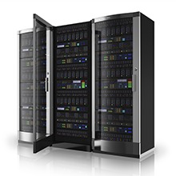
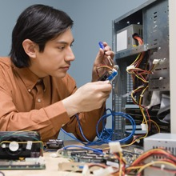

We have associated with some of the best brands in the IT business, to provide our customers with not only the best in technology but also a wide range to choose from. Our relationship with these vendors ensures that we can provide the best technical support. Above all, our partnership with these vendors guarantees the lowest price points.
Here are some of the products we sell.

|
DESKTOPS
Whether you want a custom-built desktop with best-of-breed components,
or you want the latest models from the vendor you choose,
Harshitha Technologies is a one shop window.
We carry both build-to-order PCs as well as the latest desktop models from leading vendors such as
Dell, Lenovo, HP among others.
|
SERVERS
At Harshitha Technologies, we have associated with leading server
vendors such as HP, IBM, Acer, and Dell.
Whether it is a single processor file/print server,
or the most demanding multi-core multiprocessor RAID box,
we usually can deploy as per the customer need.
We always have access to spares, or in most cases,
we keep spares ex-stock, which ensures that your downtimes if any, are indeed very low.
|  |
|
NOTEBOOKS
Are you looking for the latest road warriors,
or you are looking at notebook that is suited for your productivity needs,
we have it with us. Our sales team can also guide you to
choose the right notebook at the right prices.
Some of the brands we represent include
Acer, HP, Dell, Fujitsu and Lenovo.
|
SOFTWARE
We pride ourselves as a software solutions company. Hence,
when you buy software from us, you can also be assured
of support on the product. We will help you to not only install,
deploy and configure software, but also
our support team will give you the right advice
to get the maximum productivity on software.
We represent vendors such as Microsoft, Kaspersky, Symantec, McAfee, Oracle, Adobe, etc.
|
|
 |
NETWORKING
Are you looking at setting up networks that have zero percent downtime?
Are you looking at reliable networking products?
We can provide you routers, switches, load balancers, firewalls and VPN Solutions from leading vendors.
Our pre-sales team will also help you to design your networks!
And our support and technical team will help you deploy them.
|
PERIPHERALS
Hard disk drives, printers, toners, scanners, optical drives,
are all available.
|

|
|
SECURITY SOLUTION
CCTV & IP Cameras: As more and more areas of activity are faced with an increasing threat to security of assets,
people and systems, today's security needs have become more demanding.
CCTV & IP cameras are considered the most effective method of increasing the security.
CCTV Remote monitoring and recording facilities deliver effective site security and in most cases act as a deterrent security tool.
Access Control And Attendance Management Solution: The Access cards function to control door access and
to record time and attendance activity of employees, suitable for every office,
factories and in places where there is a very high traffic.
Biometric Solutions: Biometrics technology is now widely accepted worldwide as the only means available
for verification / authentication of an individual's identity - be it fingerprints, hand geometry, face / iris / or voice recognition.
|
AUDIO AND DIGITAL PODIUM
The digital podium system or Digital Power Lectern/ Rostrum enable the user to write on a tablet monitor with a built in podium/ Rostrum, The cutting-edge system allows the user to directly write on a multimedia teaching plan and save the images along with the voice, for the easy production of multimedia learning contents. The digital podium/ Rostrum has a built in sound system such as amplifier, wired. wireless microphone, which is essential for e-learning, and can be interfaced to all multimedia devices to facilitate their use as teaching tools. The embedded integrated controller allows to control the devices.
It is ideal for classrooms equipped with the LCD tablet monitor along with LCD projector and screen.
|

|